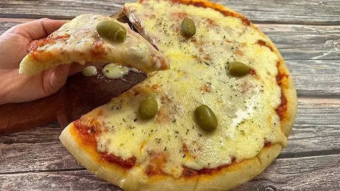

🍕Pizza casera🍕
Ingredientes
- 500 g de harina
- 250 ml de agua tibia
- 25 g de levadura fresca
- 1 cucharadita de sal
- 2 cucharadas de aceite
Preparacion
- Colocar la harina en un recipiente y agregar la sal.
- Disolver la levadura en el agua tibia.
- Agregar el agua con levadura y el aceite a la harina.
- Mezclar y amasar hasta obtener una masa suave.
- Dejar reposar la masa aproximadamente 1 hora⏱️.
- Estirar la masa y colocarla en una fuente para horno🔥.
- Agregar la salsa de tomate y distribuirla sobre la masa.
- Incorporar la mozzarella y el orégano.
- Llevar al horno precalentado a aproximadamente 200 °C🔥.
- Cocinar hasta que la masa esté dorada y el queso derretido🧀.
